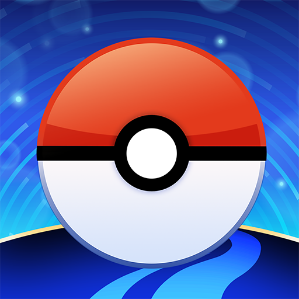
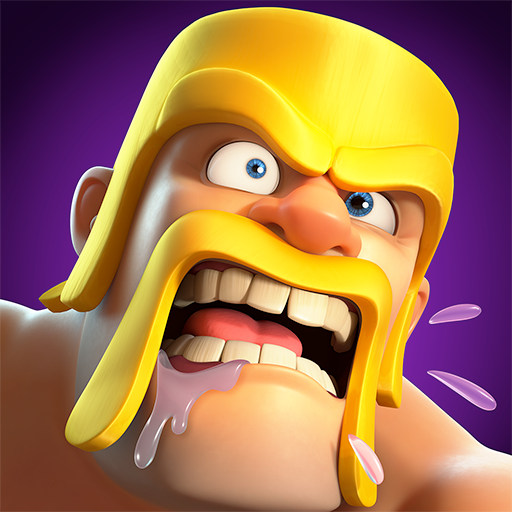
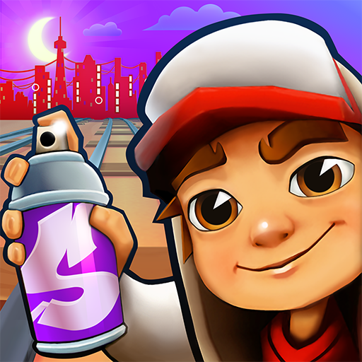

Sobre los juegos de móvil
Los juegos de móvil son títulos diseñados específicamente para ser jugados en dispositivos móviles, aprovechando sus características únicas como el tacto, la conectividad y la portabilidad.
A continuación encontrarás 5 juegos que no puedes perderte si tienes un dispositivo móvil.
Juegos recomendados
Pokemon GO
Aventura / AcciónPokemon GO es un juego de rol y acción desarrollado por Niantic. Es conocido por su enfoque en la realidad aumentada y su mecánica de recolección de Pokemon en el mundo real. Los jugadores exploran su entorno para capturar y entrenar Pokemon, enfrentándose a otros entrenadores en combates. Con una jugabilidad envolvente y una comunidad activa, Pokemon GO se ha convertido en uno de los juegos más populares de la generación.
Ver en la PlayStore

Clash of Clans
Estrategia / SimulaciónClash of Clans es un juego de estrategia en tiempo real desarrollado por Supercell. En este juego, los jugadores construyen su propia aldea, entrenan tropas y atacan a otros jugadores para obtener recursos y subir de nivel. Con una comunidad activa y eventos regulares, Clash of Clans ofrece una experiencia estratégica y competitiva que ha mantenido a los jugadores enganchados durante años.
Ver en la PlayStore

Subway Surfers
Aventura / CarreraSubway Surfers es un juego de aventura y carrera infinita desarrollado por Kiloo. En este juego, los jugadores controlan a un personaje que corre por las vías del tren, esquivando obstáculos y recolectando monedas. Con gráficos coloridos y una jugabilidad adictiva, Subway Surfers se ha convertido en uno de los juegos más populares para dispositivos móviles, ofreciendo diversión sin fin para jugadores de todas las edades.
Ver en la PlayStore

Pou
Rol / AcciónPou es un juego de rol y acción desarrollado por Zakeh. En este juego, los jugadores cuidan de una mascota virtual llamada Pou, alimentándola, jugando con ella y personalizándola a su gusto. Con una jugabilidad sencilla pero adictiva, Pou se ha convertido en un clásico de los juegos de móvil, ofreciendo horas de diversión para jugadores de todas las edades.
Ver en la PlayStore
Fruit ninja
Aventura / AcciónFruit Ninja es un juego de aventura y acción desarrollado por Halfbrick Studios. En este juego, los jugadores cortan frutas que aparecen en la pantalla utilizando movimientos táctiles, evitando bombas y tratando de obtener la mayor puntuación posible. Con una jugabilidad simple pero adictiva, Fruit Ninja se ha convertido en uno de los juegos más populares para dispositivos móviles, ofreciendo diversión rápida y entretenida para jugadores de todas las edades.
Ver en la PlayStore

Resumen de juegos
| Juego | Género | Jugadores | Nota |
|---|---|---|---|
| Pokemon GO | Aventura / Acción | 1 | 4.1/5 |
| Clash of Clans | Estrategia / Simulación | 1 | 4.6/5 |
| Subway Surfers | Aventura / Carrera | 1 | 4.5/5 |
| Pou | Rol / Acción | 1 | 4.4/5 |
| Fruit Ninja | Aventura / Acción | 1 | 4.3/5 |
| Todos los juegos están disponibles en la Google Play Store | |||